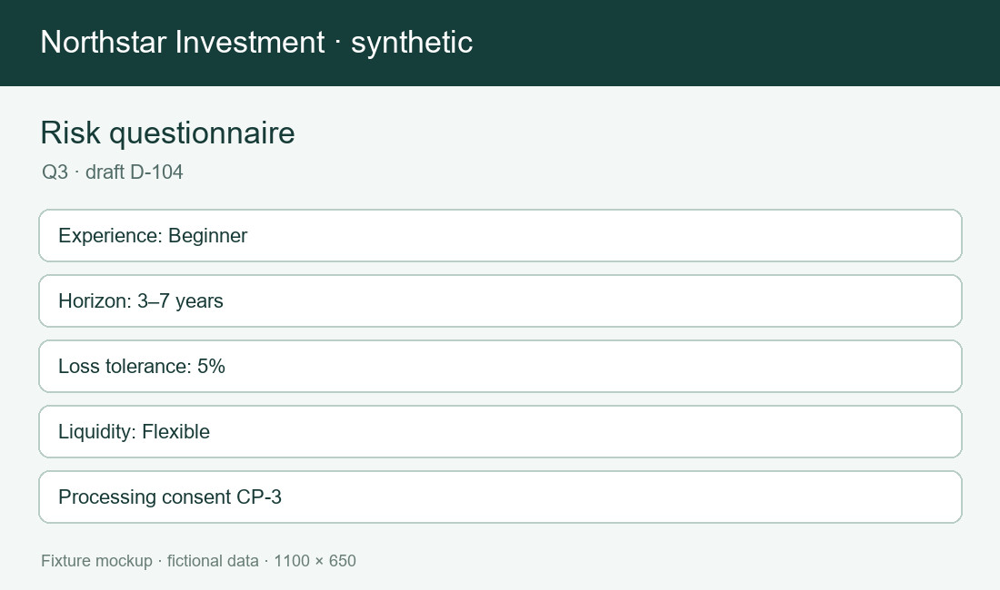
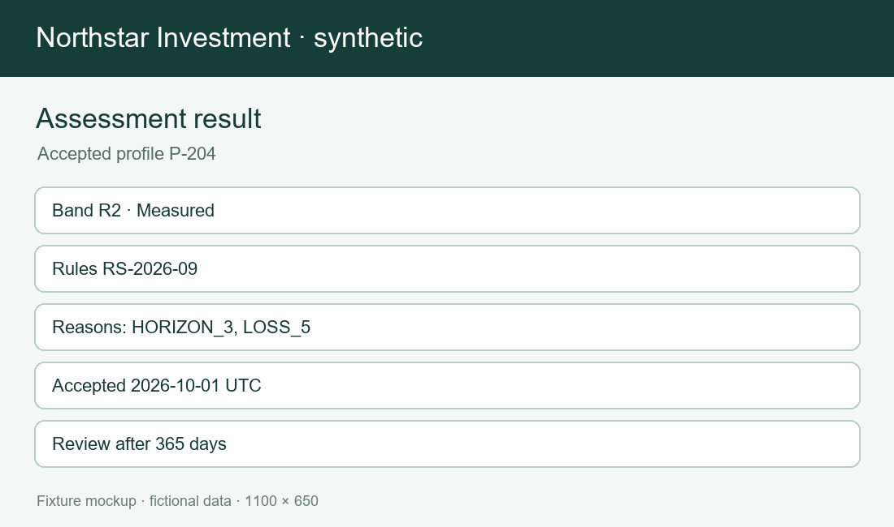

Risk profiling quick source
A concise synthetic profile journey for INV-100. Review the current profile before starting a new draft. Review the current profile after recovery as well.
| ID | Rule | Condition or exception | Ticket | Status | Evidence note |
|---|---|---|---|---|---|
| QF01 | Q3 is the current questionnaire version. | A Q2 draft cannot be submitted after 2026-09-01. | TICKET-2002 | Current | The visible rule is test evidence; the image is only a screen illustration. |
| QF02 | Experience uses NONE, BEGINNER, INTERMEDIATE and ADVANCED. | EXPERT is retired and rejected. | TICKET-2003 | Current | The visible rule is test evidence; the image is only a screen illustration. |
| QF03 | Month 36 starts horizon H3. | Month 35 remains H1. | TICKET-2003 | Current | The visible rule is test evidence; the image is only a screen illustration. |
| QF04 | Exactly 5 percent belongs to L5. | A 5.1 percent free-text answer is invalid. | TICKET-2019 | Current | The visible rule is test evidence; the image is only a screen illustration. |
| QF05 | PROFILE_PROCESSING consent at CP-3 is required. | Marketing consent alone never permits submission. | TICKET-2005 | Current | The visible rule is test evidence; the image is only a screen illustration. |
| QF06 | RiskSignal is the only external business provider called by risk profiling. | MarketPulse and CustodyBridge are unrelated to the profile submission. | TICKET-2008 | Current | The visible rule is test evidence; the image is only a screen illustration. |
| QF07 | A complete Q3 submission uses one stable idempotency key. | A duplicate with the same answers returns the stored result. | TICKET-2007 | Current | The visible rule is test evidence; the image is only a screen illustration. |
| QF08 | An incomplete RiskSignal response cannot become an accepted profile. | A missing reason code keeps the draft recoverable. | TICKET-2008 | Current | The visible rule is test evidence; the image is only a screen illustration. |
| QF09 | A failed reassessment leaves the prior unexpired profile active. | The failed attempt is not a new active profile. | TICKET-2014 | Current | The visible rule is test evidence; the image is only a screen illustration. |
| QF10 | A result expires 365 days after acceptance. | It remains visible in history after expiry. | TICKET-2013 | Current | The visible rule is test evidence; the image is only a screen illustration. |
| QF11 | An orphan Mongo audit needs a review decision. | Automatic reconciliation is planned and not implemented. | TICKET-2020 | Planned; uncertain | The visible rule is test evidence; the image is only a screen illustration. |
Visual references


Retry once.
No provider call occurs for an incomplete draft. Sławomir's złoty example is synthetic. RiskSignal & platform share a correlation ID. Q3 consent is required. A failed reassessment leaves the prior unexpired profile active. A failed reassessment leaves the prior unexpired profile active until its original expiry.
Uncertainty: automatic reconciliation of an orphan audit is planned; current inclusion requires a human review decision.